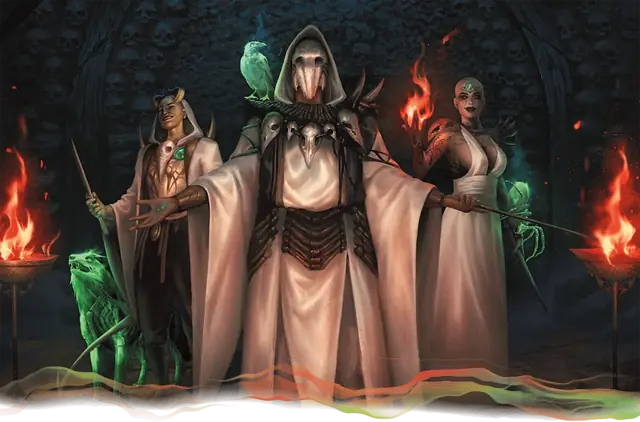

Жрец Осибуса
Priest of Osybus
Средний или Маленький Гуманоид, Нейтральный Злой

Класс Защиты 12 Инициатива +2 (12)
Хиты 60 (8к8 + 24)
Скорость 20 футов, Лазания 20 футов
| мод | спас | ||
|---|---|---|---|
| СИЛ | 10 | +0 | +0 |
| ЛОВ | 14 | +2 | +2 |
| ТЕЛ | 16 | +3 | +3 |
| мод | спас | ||
|---|---|---|---|
| ИНТ | 18 | +4 | +7 |
| МДР | 17 | +3 | +6 |
| ХАР | 11 | +0 | +3 |
Иммунитеты Испуганный
Чувства Тёмное зрение 120 футов, пассивное Восприятие 13
Языки Общий плюс ещё два языка
Опасность 6 (2 300 опыта; БВ +3)
Особенности
Татуировка Осибуса. Если урон опускает Хиты жреца до 0, он получает случайный дар. Бросьте 1к6, чтобы определить получаемый жрецом дар. Жрец возрождается в начала своего следующего хода с половиной Хитов, а его тип существа меняется на Нежить.
Эта особенность не срабатывает, если после смерти жрец получает дар, которым уже владеет, или если татуировка жреца уничтожена. Татуировка уничтожается, только если жрец получает 15 урона или больше за один ход, когда его Хиты равны 0.
1. Ужасный дар. Аура ужаса заполняет 15-футовую Эманацию, исходящую от жреца. Спасбросок Мудрости: Сл 15, все существа кроме Нежити, начинающие свой ход в Эманации. Провал: Цель Испугана до начала своего следующего хода.
2. Эктоплазменный дар. Липкая эктоплазма замедляет существ в 15-футовой Эманации, исходящей от жреца. Спасбросок Силы: Сл 15, все существа, начинающие свой ход в Эманации. Провал: Скорость цели снижается на 10 футов до начала её следующего хода.
3. Вампирический дар. Когда жрец наносит существу Некротический урон, он получает Временные хиты в размере нанесённого урона.
4. Пылающий дар. Жрец получает Скорость полёта 30 футов и Иммунитет к урону Огнём.
5. Призрачный дар. Жрец получает Сопротивление Дробящему, Колющему и Рубящему урону и Уязвимость к урону Излучением. Кроме того, жрец может перемещаться через других существ и объекты, как если бы они были Труднопроходимой местностью. Он получает 5 (1к10) Силового урона, если завершает свой ход внутри объекта.
6. Смертельный дар. Когда жрец возрождается с этим даром, все трупы Гуманоидов Среднего и Маленького размера в 30-футовой Эманации, исходящей от него, восстают в виде Скелетов под управлением жреца. Кроме того, в конце каждого хода жреца каждое существо (кроме Нежити) в 5-футовой Эманации, исходящей от жреца, получает 5 (1к10) Некротического урона.
Действия
Мультиатака. Жрец совершает две атаки Клинком душ или Некротическим снарядом в любой комбинации.
Клинок душ. Бросок рукопашной атаки: +7, досягаемость 5 фт. Попадание: 9 (2к4 + 4) Колющего урона. Если цель — существо, оно Парализовано до начала следующего хода жреца. Если этот урон опускает Хиты существа Среднего размера или меньше до 0, оно умирает, а его душа заточается в татуировке душ на теле жреца. Душа освобождается, если жрец умирает.
Некротический снаряд. Бросок дальнобойной атаки: +7, дистанция 120 фт. Попадание: 30 (4к12 + 4) Некротического урона, и цель не может восстанавливать Хиты до начала следующего хода жреца.
Бонусные действия
Татуировка душ (Перезарядка 5–6). Жрец магическим образом оживляет на своём теле татуировку душ, которая воплощается в виде Тени в незанятом пространстве в пределах 5 футов от жреца. Тень имеет то же значение Инициативы, что жрец, и ходит сразу после него, а также подчиняется его командам. Тень перестаёт быть оживлённой либо когда она или жрец умирает, либо если отдаляется от жреца более чем на 120 футов, либо если жрец использует это Бонусное действие снова.
Бонус мастерства +3
Среда обитания Любая
Сокровища Любые
Жрец Осибуса
Некромант, проклятый Тёмными Силами
Жрецы Осибуса — злые некроманты, похищающие души, чтобы питать свою пагубную магию. Благодаря гнусной сделке с жуткими силами эти жрецы способны избегать смерти, превращаясь в нежить.
Много веков назад Осибус — загадочная фигура безмерного честолюбия и злобы — основал орден жрецов, носящий ныне его имя. Осибус стремился чужими душами купить себе бессмертие. Он заключал договоры с любой сущностью, что сулила могущество, и вникал в любые тайны, способные продлить ему жизнь. Он сделался ревностным служителем Тёмных Сил и почерпнул от их бессмертной злобы, чтобы напитать своё возвышение. По мере роста могущества он делился секретами с учениками, желавшими обмануть смерть, в обмен на поклонение.
Осибус достиг цели и стал личом почти божественной силы. Своих учеников он вознаградил крупицей собственного могущества в виде теневых татуировок. Дар Осибуса наделил жрецов способностью похищать души и обманывать смерть, превращаясь в неживых монстров.
Угроза, исходившая от Осибуса и его учеников, вызвала тревогу повсюду. Ульмистская инквизиция — в ту пору считавшая союзником тогда ещё смертного графа Страда фон Заровича — сошлась с Осибусом в битве. Опасаясь, что господин со временем пожрёт их души, ученики помогли инквизиции, уничтожив телесную оболочку Осибуса. Погибая, Осибус проклял бывших союзников: их бессмертие однажды иссякнет, сам же он станет одним из Тёмных Сил.
Дабы избавиться от проклятия, бывшие последователи Осибуса обратились к тем самым Тёмным Силам, с которыми общался их господин. Им было дано поручение — заполучить могущественного аристократа, который послужит земным сосудом для вхождения Тёмных Сил в мир и его покорения. Подходящий сосуд они нашли в лице Страда фон Заровича. Действуя из тени и через посредников, жрецы нашептали графу слова ненависти. Развратив сердце Страда, они вымостили перед ним путь, что привёл его к падению в вампиризм.
Однако Осибус не солгал: он действительно стал одним из Тёмных Сил. Эти силы соткали туманную темницу, дабы заключить в ней новоявленного бессмертного Страда, тем самым сорвав замыслы жрецов использовать графа как орудие завоевания.
Жрецы Осибуса по-прежнему ищут способа выпустить Страда из Туманов и часто используют авантюристов как пешек. Они всё ещё носят имя своего ненавистного основателя, ибо знают: именно его изначальный дар дарует им их чудовищную силу.